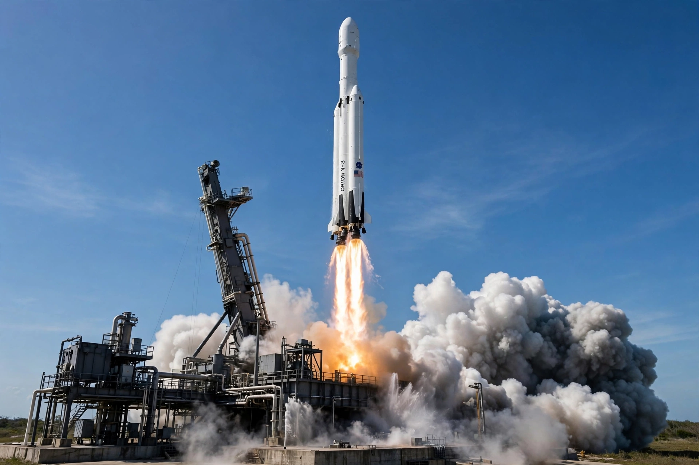

Rocket

[Image: A white rocket lifting off a launch pad in a column of flame and smoke against a clear sky]A rocket is a vehicle or device that obtains thrust by expelling mass — reaction mass — in the opposite direction, per Newton's third law. Rockets work in the vacuum of space because they carry both fuel and oxidiser, unlike jet engines, which breathe air.
Rocket principles were first exploited in Chinese gunpowder fireworks and weapons nearly a thousand years ago. Modern rocketry descends from the theoretical work of Konstantin Tsiolkovsky and the experiments of Robert Goddard and others, through the V-2 of the Second World War, to the Saturn V, the Space Shuttle and reusable Falcon boosters.
How rockets work
Chemical rockets burn propellants in a combustion chamber and accelerate the exhaust through a nozzle (described by the Tsiolkovsky rocket equation). Staging — dropping empty tanks and engines — is essential to reach orbit, because a single stage rarely carries enough propellant fraction.
Uses
Rockets launch satellites and crewed spacecraft, power missiles, and are used in fireworks, rescue flares and research sounding rockets.